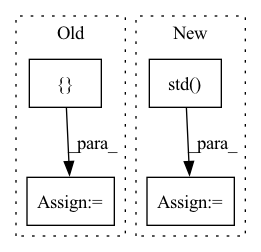

Pattern ID :2589
Before Change
// ------- metrics -------
acc1, acc5 = accuracy_at_k(output, target, top_k=(1, 5))
metrics = {
"train_neg_cos_sim": neg_cos_sim,
"train_class_loss": class_loss,
"train_acc1": acc1,
"train_acc5": acc5,
}
self.log_dict(metrics, on_epoch=True, sync_dist=True)
return loss
After Change
// ------- metrics -------
acc1, acc5 = accuracy_at_k(output, target, top_k=(1, 5))
z_std = F.normalize(torch.cat((z1, z2), dim=0), dim=1).std(dim=0) .mean()
metrics = {
"train_neg_cos_sim": neg_cos_sim,In pattern: SUPERPATTERN
Frequency: 4
Non-data size: 4
Instances Fragment ID: 10698370
Project Name: vturrisi/contrastive-learning
Commit Name: bfe92b0274d994ff61d921debfb4546343090d3c
Time: 2021-03-19
Author: vt.turrisi@gmail.com
File Name: models/simsiam.py
M Class Name: SimSiam
N Class Name: SimSiam
M Method Name: training_step(3)
N Method Name: training_step(3)
M Parent Class: Model
N Parent Class: Model
M File Name: models/simsiam.py
N File Name: models/simsiam.py
M Start Line: 65
M End Line: 99
N Start Line: 62
N End Line: 93
Before Change
cc = kmeans.cluster_centers_
// Ensure the lesser value goes first
cc = np.sort(cc, axis=0)
centers += [ ccAfter Change
lab0 = meter[labels == 0]
lab1 = meter[labels == 1]
mean += [[lab0.mean(), lab1.mean()]]
std += [[lab0.std() , lab1.std()]]
cc = kmeans.cluster_centers_ Fragment ID: 10698362
Project Name: uca-datalab/nilm-thresholding
Commit Name: 2b24d37855791e9ca50d60b2d7a9443f09a1cc70
Time: 2020-05-12
Author: danipg1409@gmail.com
File Name: better_nilm/model/preprocessing.py
M Class Name: AnonimousClass
N Class Name: AnonimousClass
M Method Name: _get_cluster_centroids(1)
N Method Name: _get_cluster_centroids(1)
M Parent Class:
N Parent Class:
M File Name: better_nilm/model/preprocessing.py
N File Name: better_nilm/model/preprocessing.py
M Start Line: 212
M End Line: 229
N Start Line: 212
N End Line: 228
Before Change
target = torch.Tensor(target).float()
if self._is_active(target, threshold=self.threshold):
data = {
"songID": songID,
"start": start,
"duration": duration
}
self.json_data.append(data)
def __getitem__(self, idx):
mixture, sources, _ = super().__getitem__(idx)After Change
sources = np.concatenate(sources, axis=0)
mixture = sources.sum(axis=0)
self.std[songID] = np.std( mixture.mean(axis=0))
self.samples_per_epoch = samples_per_epoch
def __getitem__(self, idx): Fragment ID: 10698367
Project Name: tky823/dnn-based_source_separation
Commit Name: b7a22e8f24f8206fc28ef8b7f01f01fcce0a498c
Time: 2021-08-10
Author: 40362510+tky823@users.noreply.github.com
File Name: egs/musdb18/conv-tasnet/src/adhoc_dataset.py
M Class Name: WaveTrainDataset
N Class Name: WaveTrainDataset
M Method Name: __init__(8)
N Method Name: __init__(8)
M Parent Class: WaveDataset
N Parent Class: WaveDataset
M File Name: egs/musdb18/conv-tasnet/src/adhoc_dataset.py
N File Name: egs/musdb18/conv-tasnet/src/adhoc_dataset.py
M Start Line: 91
M End Line: 117
N Start Line: 83
N End Line: 98
Before Change
}
elif dataset == "covertype":
dataset = fetch_covtype()
param = {
"objective": "multi:softmax",
"num_class": 8,
"single_precision_histogram": True
}
X = dataset.data
y = dataset.target
After Change
feature_importances_dict[key].append(val)
for fis in feature_importances_dict.values():
fi_std = np.std( fis)
print(fi_std)
def random_seed(seed, param):
os.environ["PYTHONHASHSEED"] = str(seed) // Python general Fragment ID: 10698364
Project Name: mlf-core/machine_learning_determinism_evaluation
Commit Name: 828765d146d64622c9e889320aaf983ce207a2b7
Time: 2022-06-12
Author: lukas.heumos@posteo.net
File Name: bin/train_boston_covtype_xgboost.py
M Class Name: AnonimousClass
N Class Name: AnonimousClass
M Method Name: train(5)
N Method Name: train(4)
M Parent Class:
N Parent Class:
M File Name: bin/train_boston_covtype_xgboost.py
N File Name: bin/train_boston_covtype_xgboost.py
M Start Line: 21
M End Line: 62
N Start Line: 20
N End Line: 76